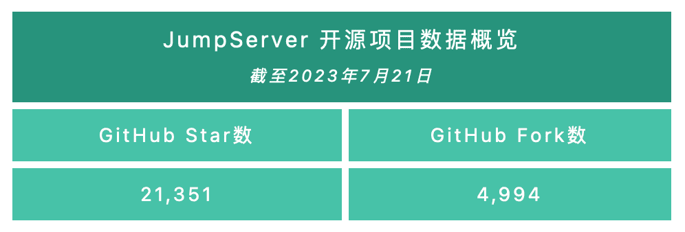
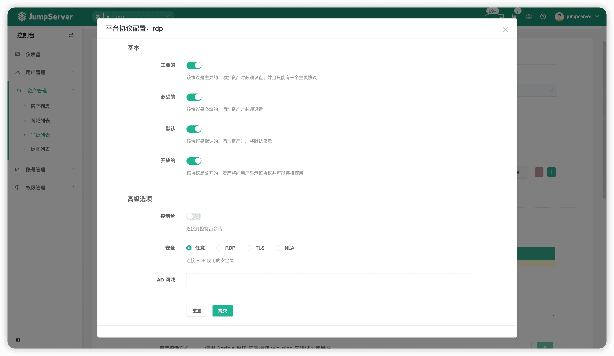
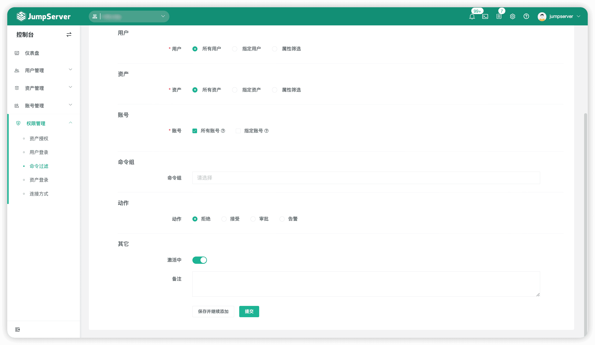
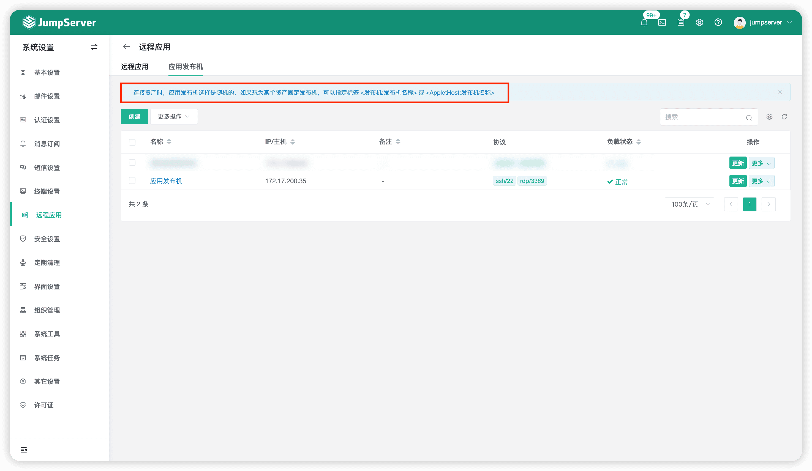
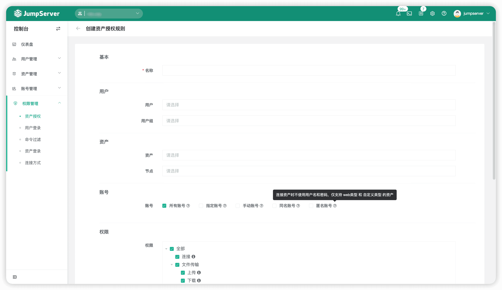
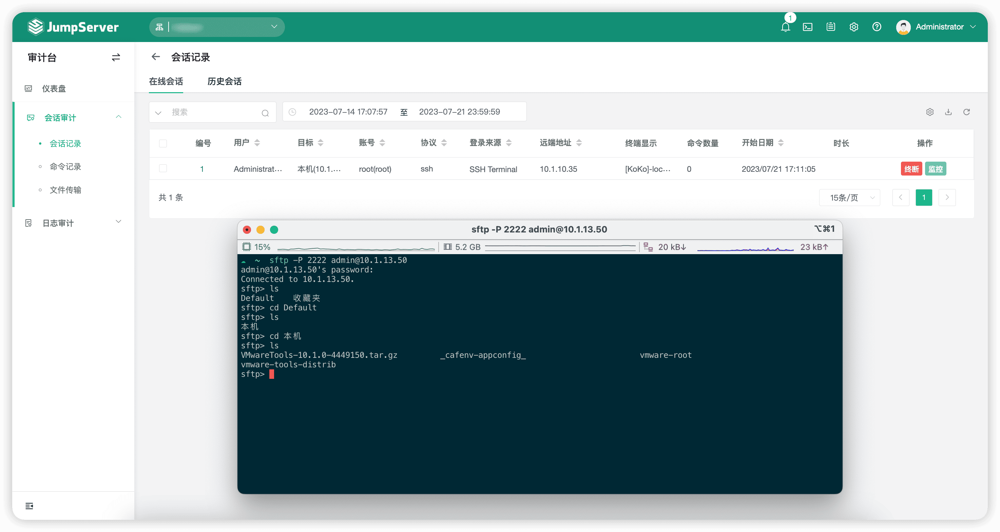
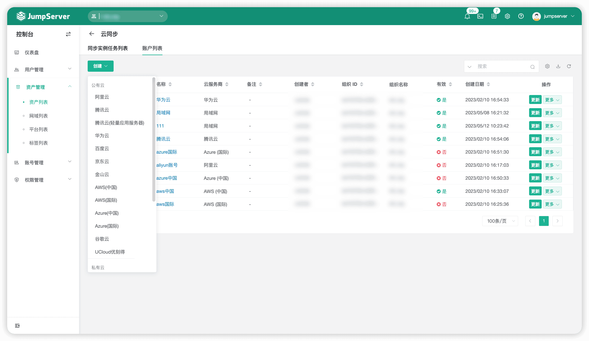

2023年7月24日，JumpServer开源堡垒机正式发布v3.5.0版本。在这一版本中，新生代数据库连接组件——问题终结者Chen强势来袭，替代原有的OmniDB组件，在兼容旧版本的同时，解决了旧组件性能不足的问题，为用户提供更稳定、更强大、更持久的服务支持。同时，JumpServer开源项目积极投身技术前沿，紧跟时代发展潮流，新增Kael组件。Kael组件集成GPT平台，支持对ChatGPT资产进行纳管，由JumpServer集中进行管理。
此外，资产登录方面，新版本JumpServer支持AD域用户登录Windows资产，支持授权匿名账号登录Web和自定义类型的资产，并且支持对SFTP会话进行审计。命令过滤方面，新增告警命令动作，执行命令的同时将告警消息推送给指定人员，进一步提升系统的安全性。远程应用方面，支持通过使用资产标签匹配机制，指定远程应用发布机连接某个远程应用。
X-Pack增强包方面，新版JumpServer的“云同步”模块新增支持UCloud云平台，多云平台的资产同步功能更加强大，满足了更多企业用户的多云管理需求。同时，XRDP组件回归，支持对Windows 2003版本的资产进行连接和审计。
新增功能
1. 新增Web可视化数据库连接组件Chen，替代原有的OmniDB组件
在JumpServer v3.5.0版本中，Chen组件替代原有的OmniDB组件成为数据库连接组件，用以支持Web GUI端的数据库连接功能，为用户提供更稳定、更强大、更持久的服务支持。
目前，Chen组件支持的数据库包括了MySQL 5.7/8.0+、MariaDB、PostgreSQL、SQL Server（X-Pack增强包内）、Oracle（X-Pack增强包内）。
▲ 图1 新增Web可视化数据库连接组件Chen，替代原有的OmniDB组件
2. 新增GPT资产连接组件Kael，支持纳管ChatGPT资产
在JumpServer v3.5.0版本中，新增Kael组件。该组件集成了GPT平台，支持对ChatGPT资产进行纳管，统一管理GPT平台为使用人员提供ChatGPT服务。
通过JumpServer对ChatGPT资产进行统一管理的优势具体体现在以下几方面：
■ 降低门槛：用户通过JumpServer平台进行简单操作，即可实现ChatGPT资产纳管功能；
■ 使用方便：用户通过对接API的方式访问ChatGPT，只需添加一个GPT资产，即可在运维团队或者企业中直接使用ChatGPT；
■ 用户隔离：虽然每个用户使用的是同一个资产，但是每次会话都是用户级别的，用户会话相互独立；
■ 交互安全：管理员可以对用户与GPT之间的内容进行过滤和审核，并且支持对其进行录像审计及会话记录。
▲ 图2 新增GPT资产连接组件Kael，支持对ChatGPT资产进行纳管
3. 支持AD域用户登录Windows资产
在JumpServer v3.5.0版本中，在Windows资产平台中配置AD域后，可以在连接该平台类型的资产时使用AD域用户进行登录。

▲ 图3 支持AD域用户登录Windows资产，在资产平台中配置AD域4. 命令过滤功能新增告警动作
在JumpServer v3.5.0版本中，命令过滤功能除了支持“拒绝”、“接受”、“审批”动作以外，还新增支持“告警”动作。当命令过滤规则匹配到用户执行的命令时，系统会自动将用户执行命令的行为以告警消息的方式推送给指定人员，进一步提升系统的安全性。

▲ 图4 命令过滤功能新增告警动作5. 支持指定远程应用发布机连接某个远程应用
在JumpServer v3.5.0版本中，用户通过使用资产标签匹配机制给某个远程应用资产配置标签后，可以指定远程应用发布机连接到此远程应用。注：标签名为“发布机”或者“AppletHost”，值为发布机的名称。

▲ 图5 支持指定远程应用发布机连接某个远程应用6. 支持授权匿名账号登录Web和自定义类型的资产
在JumpServer v3.5.0版本中，新增匿名账号的授权。匿名账号没有用户名和密码，当连接Web和自定义类型的资产时，可以不代填任何认证信息，仅仅只是拉起了远程应用。

▲ 图6 支持授权匿名账号登录Web和自定义类型的资产7. 支持对SFTP会话进行审计
在会话审计方面，JumpServer v3.5.0版本的会话记录功能支持对SFTP会话进行审计。

▲ 图7 支持对SFTP会话进行审计8. 支持对UCloud公有云资产进行自动同步（X-Pack增强包内）
在JumpServer v3.5.0版本的“云同步”模块中，支持的云平台类型新增UCloud平台。多云平台的资产同步功能更加强大，满足了更多企业用户多云管理的需求。

▲ 图8 支持对UCloud公有云资产进行自动同步（X-Pack增强包内）9. 新增Windows资产连接组件XRDP，支持对Windows 2003版本的资产进行连接和审计（X-Pack增强包内）
在JumpServer v3.5.0版本中，XRDP组件回归。针对Windows 2003版本的资产，JumpServer将会通过XRDP组件进行资产连接和审计。
功能优化
■ Web Luna页面的新窗口连接资产时，顶部显示资产名称；
■ 优化SFTP根目录配置，支持使用${ACCOUNT}和${USER}变量 ；
■ 优化SSH连接复用策略 ，账号密码更新后不再复用，提高了安全性；
■ 新增DEBUG_ANSIBLE配置项，支持打印Ansible任务执行的详细日志；
■ 优化终端端点规则，支持快捷启用和禁用；
■ 优化飞书接收到的工单审批链接无法点击的问题；
■ 优化账号列表，支持通过密钥类型进行搜索；
■ 优化Windows WinRM，采用NTLM方式进行认证，安全性更高；
■ 优化LDAP用户导入、同步时，支持“is_active”值为-1的情况；
■ Core服务默认启动4个Worker进程（之前数量为2*核数+1，最大值为10）；
■ 优化“资产详情”页面，支持更新标签；
■ Web资产协议端口直接从URL中获取 ，不允许在协议中进行修改；
■ 优化用户个人信息页面，认证方式和用户来源一致时无法解绑，比如钉钉来源用户无法解绑钉钉认证；
■ 优化使用rz、sz命令下载文件完成后，终端卡住的问题；
■ 通过KoKo组件连接资产时，支持对粘贴的多行命令进行命令过滤器校验；
■ 优化Web SFTP软链接目录的显示问题，即软连接刷新时会显示为文件；
■ 优化通过Lion组件连接资产时，会话连接断开及监控会话结束后的弹出提示信息；
■ 优化Core组件日志目录，各个组件日志层级保持一致 （/data/jumpserver/core/logs → /data/jumpserver/core/data/logs）；
■ 优化连接令牌超时时间的配置项名称 （CONNECTION_TOKEN_ONETIME_EXPIRATION、CONNECTION_TOKEN_REUSABLE_EXPIRATION）；
■ 点击“用户管理”菜单下的“角色列表”选项后，默认切换到全局组织（X-Pack增强包内）。
Bug修复
■ 修正一些拼写错误 （感谢https://github.com/cuishuang的贡献）；
■ 修复定时任务偶尔会出现重复执行的问题；
■ 修复网络设备切换账号时，连接失败的问题（思科使用enable切换）；
■ 修复直连SFTP及Web SFTP时，上传大文件失败的问题；
■ 修复资产平台创建时，自动化配置项默认值设置不正确的问题；
■ 修复创建“服务端点”时，“主机”字段被禁用，无法输入的问题；
■ 修复批量执行命令时，资产名称包含特殊字符“[”执行失败的问题；
■ 修复导入LDAP用户时，数据库超时导致“Lock wait timeout”报错的问题；
■ 修复推送账号不填写“家目录”信息时，推送失败的问题；
■ 修复账号改密任务报错，导致密码保存失败的问题；
■ 修复手动输入的同名账号登录资产失败的问题；
■ 修复账号推送任务中采用动态生成密钥策略时，推送失败的问题；
■ 修复终端端点不填写Host地址，导致没有匹配的问题（Host若为空，则使用浏览器的访问地址）；
■ 修复通过Ansible测试资产可连接性报错的问题（报错信息为：Connection to UNKNOWN port 65535 timed out），延长Ansible的超时时间；
■ 修复一些导入问题，例如导入用户手机号为字典类型时出现报错信息等；
■ 修复一些升级迁移的问题；
■ 修复创建工单时，时区不同导致过期时间保存不正确的问题（X-Pack增强包内）；
■ 修复手动切换到全局组织后，点击其他菜单会回到上个非全局组织的问题（X-Pack增强包内）。